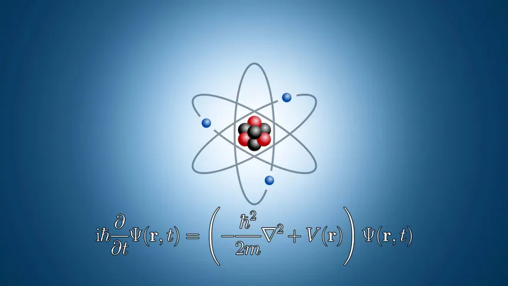

Fundamental Workings of the Universe
The study of matter, light, eveything inbetween and beyond.

All natural phenomena are constrained by physical laws. We as humans experience the laws of physics everyday. In both a physical and conceptual sense, gravity weighted heavily on me when I approached the realm of quantum mechanics. Since math is often used to describe the precise nature of physics, I'll try to avoid complex theory and simply describe how I've used it for my research.